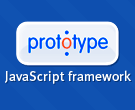

Advertisements
Copyright © tutorialspoint.com
|  |
Prototype is a JavaScript framework that aims to ease development of dynamic web applications. Prototype is distributed as a single file called prototype.js This tutorial gives a complete understanding on Prototype. Send your feedback using Contact Us Form |
Home: Startup page for this tutorial. Same page you are looking at right now.
Short Overview: Gives a brief overview of Prototype Framework.
Useful Features : List out all the useful features of Prototype Framework.
Utility Methods : Complete list of all the utility methods along with examples
Element Object: Complete list of all the Element Object methods along with examples
Number Processing: Complete list of all methods to process numbers along with examples
Strings Processing: Complete list of all methods to process strings along with examples
Array Processing: Complete list of all methods to process arrays along with examples
Hash processing: Complete list of all methods to process hash along with examples
Basic Object: Prototype basic object is explains along with all the related methods.
Templating: Understand how you can use Prototype Template to have formatted output.
Enumerating: JAVA like enumeration is explained along with all the related methods.
Event Handling: Learn how to handle events in an easy way.
Form Management: Learn form data submission using Prototype Framework.
JSON Support: Learn how Prototype Framework supports JSON.
AJAX Support: Learn how Prototype Framework has made AJAX support so simple and easy to use.
Expressing Ranges: Small topic to give complete idea on how to use ranges.
Periodical Execution: Execute your action periodically.
Copyright © tutorialspoint.com